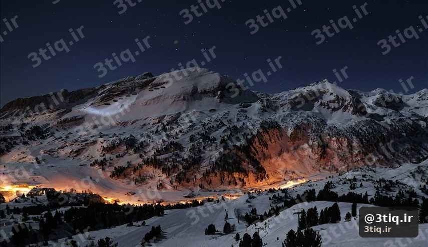
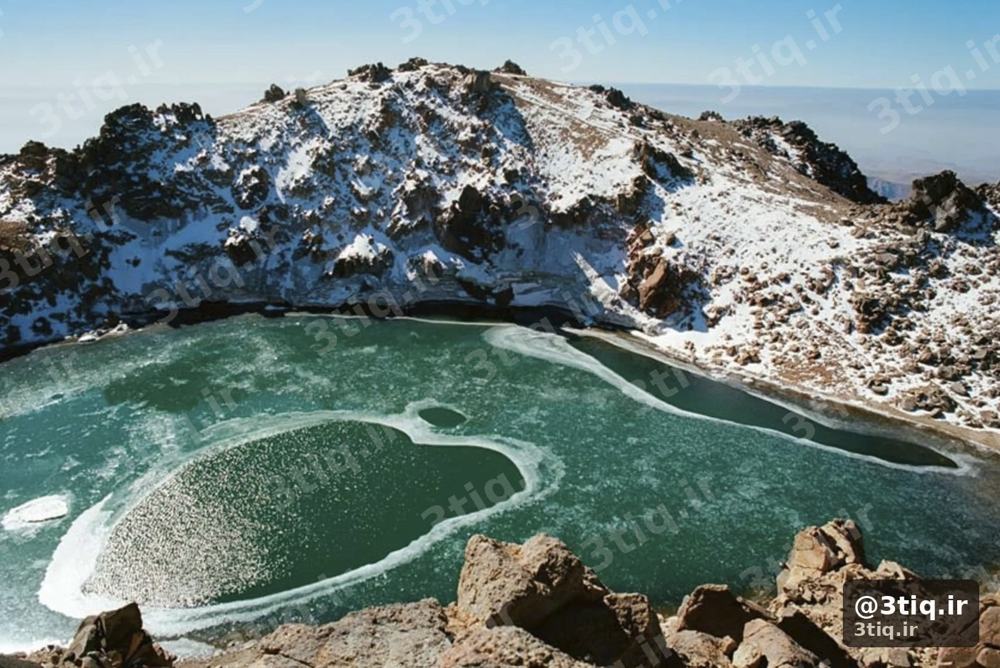

+۱۰٪
UV به ازای هر ۱۰۰۰m
تا ۸۰٪
بازتاب از برف تازه
SPF ۳۰+
حداقل ضدآفتاب
۲ ساعت
تمدید ضدآفتاب
خیلی از کوهنوردان ایرانی فقط وقتی «گرم» است به آفتاب فکر میکنند. واقعیت این است که در ارتفاع — حتی با باد خنک یا هوای ابری — اشعه فرابنفش (UV) قویتر است و پوست و چشم سریعتر آسیب میبینند.
این مطلب یک مقاله آموزشی وبلاگ است، نه راهنمای صعود یک قله خاص. هدفش این است که قبل از هر برنامه، محافظت از آفتاب را مثل آب و لباس لایهای جدی بگیری.

چرا در کوه UV بیشتر است؟
- رقیقتر بودن جو: تقریباً حدود ۱۰٪ افزایش UV به ازای هر ۱۰۰۰ متر ارتفاع (قانون سرانگشتی)
- بازتاب برف و یخ: برف تازه تا حدود ۸۰٪ UV را برمیگرداند — زیر چانه، بینی و پلکها هم میسوزند
- آسمان صاف در ارتفاع: ابر پایین در دره ممکن است تو را فریب بدهد؛ بالای ابر آسمان روشنتر است
- زمان طولانی در فضای باز: ۶–۱۲ ساعت روی مسیر = دوز تجمعی بالا
☀️ نکته مهم
باد خنک حس سوختن را کم میکند، اما آسیب UV را متوقف نمیکند. «سردم است» ≠ «آفتاب ندارم».
چه آسیبهایی رایج است؟
- آفتابسوختگی: درد، تاول، اختلال خواب شب قبل از صعود قله
- برفکوری (photokeratitis): سوزش چشم، اشک، حساسیت به نور — گاهی چند ساعت بعد ظاهر میشود
- لبترک و سوختگی لب: خیلی شایع و اغلب فراموششده
- گرمازدگی و کمآبی: آفتاب شدید تعریق را بالا میبرد — با آبرسانی در ارتفاع همراه است

محافظت عملی در کولهپشتی
۱. ضدآفتاب
- حداقل SPF ۳۰ (بهتر: ۵۰) با محافظت UVA/UVB
- ۳۰ دقیقه قبل از شروع مسیر بزن؛ هر ۲ ساعت تمدید کن
- نقاط فراموششده: گوش، گردن، پشت دست، زیر بینی، لب (بالم SPFدار)
۲. عینک آفتابی کوهستان
- عدسی دسته ۳ یا ۴ برای برف و ارتفاع بالا
- پوشش جانبی داشته باشد تا بازتاب از کنار نیاید
- یدکی سبک در کوله — شکستن عینک در برف خطرناک است
۳. لباس و کلاه
- کلاه لبهدار یا با محافظ گردن
- آستین بلند نخی/فنی روشن در تابستان — بهتر از تیشرت نازک
- سیستم لایهای را با لباس سهلایه هماهنگ کن؛ لایه بیرونی میتواند UV را هم کم کند
زمانبندی هوشمند
- اوج UV معمولاً حدود ۱۰ تا ۱۶ است
- حرکت خیلی زود صبح، هم برای طوفان تابستانی بهتر است و هم دوز UV را کم میکند — ببین طوفان و رعد و برق
- در توقفهای طولانی، به سایه سنگ یا چادر پناه ببر
⚠️ اشتباه رایج
«فقط یک ساعت تا قله مانده، ضدآفتاب لازم نیست» — درست در همین یک ساعت آخر روی برف و ridgeline، شدیدترین سوختگیها رخ میدهد.
چکلیست سریع قبل از حرکت
- ضدآفتاب + بالم لب SPF در کوله (نه فقط در ماشین)
- عینک کوهستان روی سر / در دسترس
- کلاه و لایه آستینبلند
- آب کافی — آفتاب = تعریق بیشتر
- تمدید ضدآفتاب در برنامه توقفها
اشتباهات رایج
- اعتماد به ابر نازک («امروز آفتاب نیست»)
- عینک معمولی شهری بهجای عینک کوهستان در برف
- فراموش کردن تمدید بعد از عرق کردن
- نادیده گرفتن پشت گردن و گوشها
- شروع درمان سوختگی با مواد خانگی نامناسب بهجای خنک کردن و مراقبت استاندارد
✅ جمعبندی
در ارتفاع، UV قویتر است و برف آن را چند برابر میکند. ضدآفتاب، عینک مناسب، کلاه و لباس پوشیده را مثل نقشه و آب جزء تجهیزات ثابت بدان — نه وسیله لوکس تابستانی.
برای آمادگی کامل قبل از برنامه، چکلیست قبل از صعود و بررسی آبوهوا را هم مرور کن.